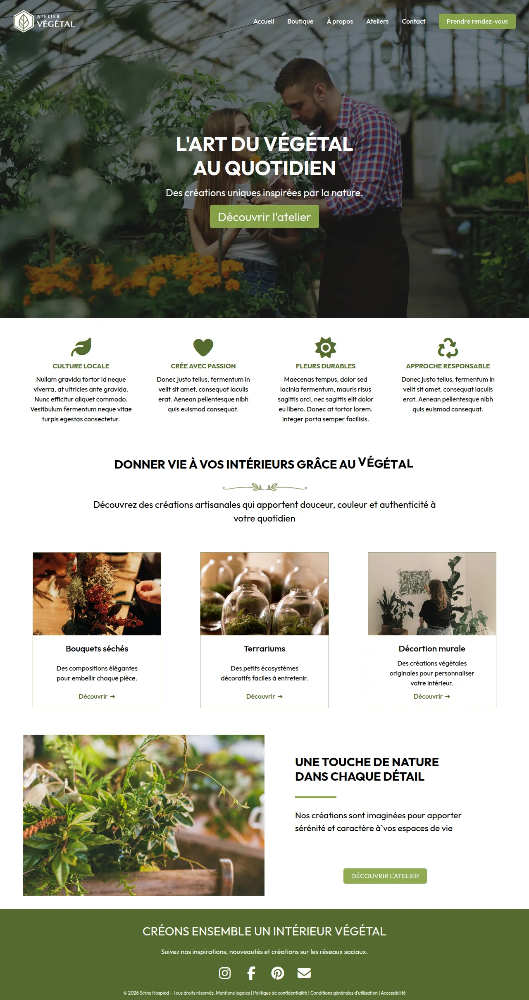
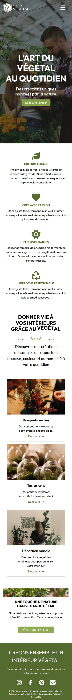

Front-end Development
Atelier Végétal



RoleFront-end Development
ToolsHtml, CSS
YearJune 2026
ClientSchool Exercise
Front-end Development


Atelier Végétal is a website for a fictional workshop that creates handmade plant decorations: dried bouquets, terrariums and wall decor. This was a school exam in which I had to code the homepage from scratch in three hours, using only HTML and CSS. The focus was on a clean structure, a clear visual hierarchy and a polished result, not on functionality, so the buttons and links are not active.
The constraint was time and tools: a full desktop page, from the hero to the footer, with no framework, no JavaScript and only three hours. I had to plan the structure quickly, build reusable styles for the cards, icons and buttons, and keep the result consistent and professional.
A low-fidelity wireframe sets the layout, not the colors, so the palette came from the subject and the supplied photos. A deep moss green, taken from the leaves, anchors the icons, headings and footer. A fresher, lighter green marks every button, so the next step is always easy to spot. White backgrounds and dark text keep the page clean and readable, and let the photographs bring in warm oranges and browns. The result feels natural, calm and handmade.
With four hours, I started from the wireframe: I identified the sections of the page, from the hero to the footer, and wrote the HTML structure first. I then styled the page section by section, creating reusable styles for the cards, icons and buttons to save time and keep everything consistent. I kept the last part of the time to adapt the layout to smaller screens and to check the spacing and details.
Atelier Végétal was a lesson in working fast with strong fundamentals. With only HTML and CSS, a wireframe and a tight deadline, I learned to plan before coding, to reuse styles instead of repeating them and to think about responsiveness from the start. The result is a simple but polished page that shows how much a clean structure and a consistent style can do.